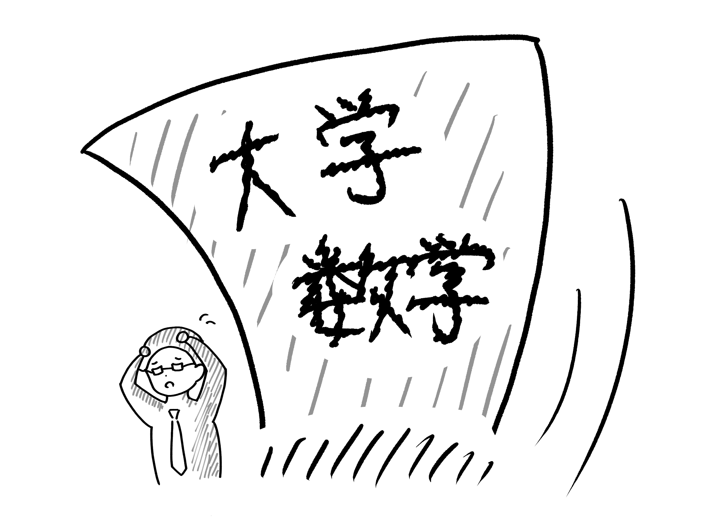

さっそく、本題である「２０代の転機」について質問してみた。
ー では、20代の転機について教えてください。
ー 「こういった出来事が私の人生を大きく変えた！」というような出来事はありましたか？
林： うーーん、２０代、ですよね。
実は、特に人生に多大な影響を与えるような、ビッグイベントがあったわけではないのですが。
しいて言うなら、大学でのエピソードが挙げられると思います。
ー 大学でのエピソードですか？
林： はい、私は大学受験をして、数学科に入ったんですよ。
そうすると、まあ大体数学が得意な人が入ってくるわけなんですよね。
ー 確かに、そうですよね。
林： だから、私自身もある程度数学得意で入って、授業とかも聞いた訳なんですけど。
ちょっとね、レベルが違い過ぎて（笑）。
ー あ～．．．（笑）
林： 周りも、すごい人たちが多すぎて。
その時には既に先生になろうって決めてたんですけど、それこそ数学の学者になろう、とか。
そういうのはちょっと無理だなっていうのは、その時に確かに思いましたね。

ー 確かに、専門分野を極めていく道は、簡単にはいきませんよね。
林： そうですね．．．もちろん最初からなるつもりはあんまりなかったんですけど、いやもうこれはもう無理だなと（笑）
レベルが違いすぎるっていうのがあって、やはり数学の先生になろうという風に思いましたね。
中学、高校（の数学）だったら大丈夫だろうということで、硬く決めたきっかけにはなりましたね。
ー だから、大学院も行かないことにしたんですか？
林： あ、そうそう。大学院に行かなかったのも、先生になるって決めてたので。
だったら現場に出て、先生としての経験を積みたいっていうことで、院進ではなく仕事しようっていう風に思いましたね。
ー なるほど、そんなことがあったんですね。
林： そこから、22歳で新卒として学校に就職して、中等二期生が４年生の時に、私が副担任として入ったんですよ。
で、４年，５年，６年っていう風に副担任として一緒にあがって、そのあと4年目に二期生が卒業して。
その次に中等１年生（八期生）のところに配属されたんですが、私は初めて担任になったんですよね。
そのときはやっぱり転換期というか、それまで副担任だったのが、また中１から担任の先生で、っていう。
ー ４年目にして、初めて副担任から担任になったんですね。
林： その後、いくつだったかな、28とかの時かな。6年目あたりになって、学校の広報活動をやるようになったんですよ。
ー 広報活動ですか？
林： そうそう。やっぱこの学校って私立の学校なので、生徒に来てもらわなきゃいけないわけなんですよ。
なので色々な所で学校説明会とかを行っているんですけど、そういうのをやってほしいって言われたのが、28の時かな。
学校の先生やりつつ、それこそ塾とか、日能研とかサピックスとか、そういうとこに説明に行ったりとか。
学校でやる学校説明会とかそういうものも、やったりしましたね。
ー ちなみにそれは、学校の説明をするだけですか？授業とかはしないで。
林： あ、そうそう。授業とかはしない。学校についての説明だけ。
普通に学校の先生として授業をやるつもりで入ったので、こういった活動をやることになるとは、
当時は全然予想してなかったですね。
ー そういった活動も、先生が行っていたんですね。
林： もちろん、そういうこともしなきゃ生徒も来てくれないので。
やる人がいるのはもちろんそうなんですけど、まさか私がやることになるとは思いもしませんでしたね。
こういった予想外の業務をやったのも、一種の転機といいますか。私の人生の転換点であったと思いますね。
数学の教員ということで、数学に関することも聞いてみた。
ー 先生と数学の関わりについても、ぜひ聞かせてください。
ー まず先生は大学の数学科に入学したとのことですが、その道を目指したきっかけはありますか？
林： 数学科に入学したきっかけですか．．．
私はもともと、「先生になりたい」ということが根幹にあったんですよ。
といっても数学の先生になりたかったわけではなくて、最初は科目は考えていなかったんですよ。
ー そうなんですか！？
ー 林先生と言ったら数学のイメージがあったので、それは驚きです。
林： 実はそうなんですよ。
自分が勉強をしていく中で単純に数学が一番できたので、
得意を活かせる数学科の教員の道を選んだんです。
ー なるほど。
林： そして数学の教員免許を取るためには数学科か、教育学部かの二つの候補があったんです。
じゃあどっちに行った方がいいのかって話になるんですけど、先ほども言ったように私は数学が得意だったので。
数学科の方が入試で数学の配点が高くなるので、自分の得意を活かせる数学科を選んだって訳です 。
ー そうだったんですね。
ー じゃあ、先生は数学ヲタクみたいな感じじゃなかったんですね（笑）
林： じゃないですね（笑）
なので研究の道じゃなくて、教員として教える立場になったって感じです。
ー 確かに、それだと数学を研究するっていう道は難しいかもしれないですね。
ー これに関連した話題で、聞いてみたいことがあるんですが良いですか？
林： お、なんでしょう？
ー 好きな公式や、好きな数列などはありますか？
林： う～～ん．．．好きな公式か数列ですか．．．
林： ピタゴラスの定理、とかかなぁ．．．？
ー おーー。あの直角三角形の辺の長さを二乗した時の関係式みたいなやつですよね。
ー ちなみに、理由などはありますか？
林： 理由．．．理由かぁ．．．
しいて言うなら、いろんなとこに使われていて、メジャーだからですかね。よく知ってる人が多い。
実は昔の、江戸時代の算数、算学って呼ばれてたんですけど、などでもよく使われてたりしたんですよ。
ー そんな昔から日本に伝わっていたんですね。
ー あ、そうだ。好きな数学者とかはどうでしょう？いますか？
林： 好きな数学者．．．好きかどうかは分かりませんが、大学の卒業研究では関孝和（せきたかかず）っていう、
昔の、先ほど言った算数がまだ算学だった時代の数学者について調べたりはしましたね。
ー そうなんですね。関孝和。
ー そういえば、先生はどういった研究室にいたんですか？
林： 私は4年生の時に入ってたゼミが、数学の教育的なゼミでしたね。
「数学を研究しよう！」みたいなのではなく、数学の先生になりたい人が集まる、
「数学の教育について考えよう。」みたいなゼミ。
林： そこで、昔、それこそ江戸時代などの、算学と呼ばれていたころの算数を紹介できないかなというところで、
研究していましたね。昔の算数はどうなっていたのかについて研究して、卒論にまとめました。
ー 面白そうですね。
ー ちなみにそのテーマを選んだ理由とかって覚えていますか？
林： いや～、覚えていないな。
なんで昔の数学に興味を持ったんでしょうね（笑）
ー なんででしょう（笑）